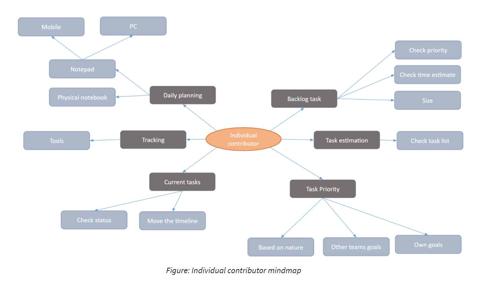
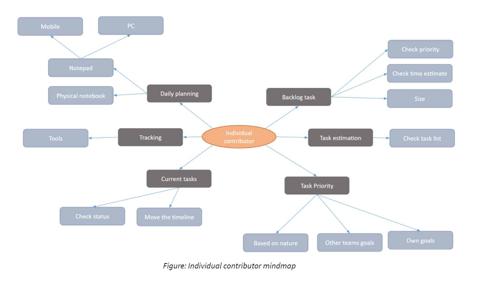
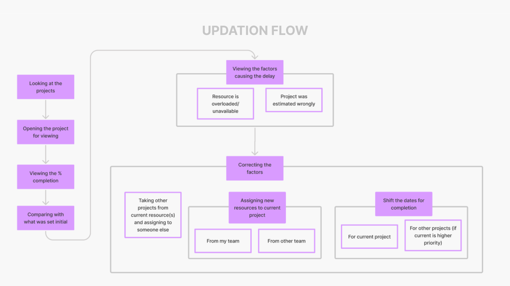
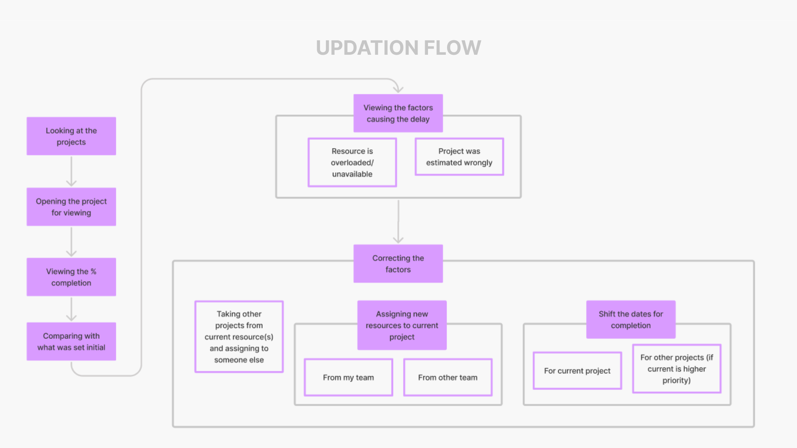

COMPANY PROJECT
Roadmap Planning Application
Web application for managers to perform yearly planning and employee management


COMPANY PROJECT
Roadmap Planning Application
Web application for managers to perform yearly planning and employee management
INFORMATION
The Contextual Analysis was proprietary so I cannot include here. I performed feature Analysis of each internal software and identified connections and gap areas.
HOMOGENEOUS
Vertically
Ranges from Individual Contributors to the Managing Director. Samples from different levels from same department
HETEROGENEOUS
Horizontally
Ranges between teams. Samples from different departments
PERSONA 1
ABOUT
GOALS
TASKS
PAINPOINTS
BEHAVIOR
NEEDS
PERSONA 2
.png)
ABOUT
GOALS
TASKS
PAINPOINTS
BEHAVIOR
NEEDS
SCOPE
The Scope was then reduced to Roadmap Planning and its components instead of project planning
PERSONA
The Persona was then limited to Managers since they deal majorly with the planning and management
01
Creation from a template
The tool helps people to create a roadmap with presets instead of making it from scratch. The template allows the user to add the number of tasks as well as the type of tasks. It also incorporates the buffer time that could be considered for every project, number of employees in the team and allows us to choose the method of task scheduling.

02
Smart Sections
The tasks/projects are grouped under sections. When we start entering the name of the section, we see suggestions pop up like 'Backlog items', 'Upcoming items' and 'Other team requirements'. These could also be accessed by a keyboard. Inclusion of such suggestions help the user to get started easily.03
Smart Tasks
Most tasks/projects in the company had a specific ticket which was generated from another tool. So smart suggestions would allow us to autofill the details corresponding to the ticket.

04
Details Bubbles
Managers generally tend to ignore the details about the projects. As soon as you click in the timeline panel to add the quarter, details bubbles pop up which would prompt the user to fill the details on the go. The bubbles currently are for priority, size and number of employees. The entries in the bubbles could be changed by clicking on the gear icon. The tasks could also be divided by clicking on a split button so that it could be kept for hold and taken forward at a later point of time.05
Milestones Addition
Milestones or checkpoints could be added on the Gantt chart by clicking on the black line at the top. Name of the milestone and recurrence can be added too. The milestone appears as black line in the Gantt chart. The milestone and be clicked and dragged to move it to another date. All the added milestones can be seen at the Milestones page in the left panel.

06
Comments Section
Comments can be added to the items by first selecting the comments icon on the top bar. Threads and previous comments could be found in the comments details panel.07
Future Notes and Goals
In the left menu we can find this option. This includes all the goals and projects which might be taken in the future but their timeline is unknown. They might be taken up next year, or the year after that or never. The goals be sent directly to the timeline in case we wish to plan for that in the current timeline.

08
Buckets Section
This is another method for assigning details to the projects. The left bucket is your bucket from where you can move items (projects) to other buckets, which could be divided on the basis of priority, teams, etc.09
Finalize Roadmap
The user can see the finalized roadmap in different views. We have the summary view where we see the list of projects in a list form with all its details. We have a Quarters view where we can see the items taken up in each quarter with section segregation. We also have a FTE view(Full time Employee) view where we can see how every employee is occupied in each quarter.

10
Employee Management
In the employee management page we can understand details about an employee. We can note down the skill set an employee currently has and the skill set the employee wishes to learn. A section for analytics has also been included. Since there are a bunch of auxiliary tasks apart from the main tasks, a section for the same is created where a person can add their auxiliary tasks.11
Priority setting
Since setting the priority is a cumbersome task. I have come up with a priority setting matrix where the items are arranged in multiple rows where higher rows have higher priority. Items in the same row are of the same priority.
FOCUS GROUP 1
5
FOCUS GROUP 2
3
FOCUS GROUP 3
3
APPRECIATED FEATURES
Milestones adding feature
Making notes for the future
FTE note for hiring
Adding details in place
Amount of FTE allocated for that month
Individual employee management
Milestones adding feature
Making notes for the future
FTE note for hiring
Adding details in place
Amount of FTE allocated for that month
Individual employee management
IMPROVEMENT AREAS
Update Roadmap workflow to approval
Ability to pick up items from backlog
Ability to look at trends of projects
Priority setting in Future goals and notes
Able to see the project dependency
Update Roadmap workflow to approval
Ability to pick up items from backlog
Ability to look at trends of projects
Priority setting in Future goals and notes
Able to see the project dependency
More ideations need to be done with layouts
Ability to decide hollistic goals for the company
COLLEGE PROJECT : IDC, IIT BOMBAY
Maid for you

COLLEGE PROJECT : IDC, IIT BOMBAY
MEMCALL: Design Fiction


 

 
